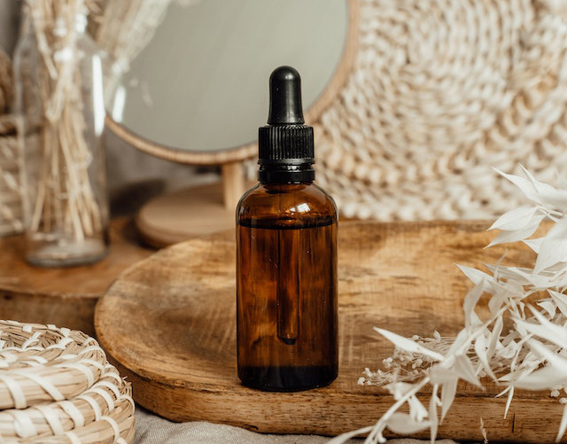
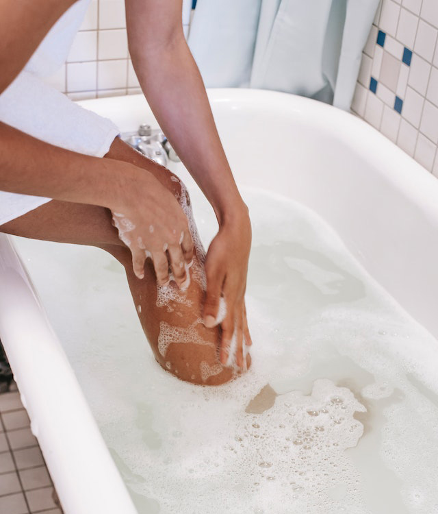

BENEFICIOS
Descubre por qué los jabones artesanales jabones artesanales son mejores para tu piel

Los jabones artesanales son una opción popular para aquellos que buscan productos naturales y amigables con el medio ambiente. Estos jabones son elaborados a mano con ingredientes naturales y orgánicos, como aceites esenciales, plantas y hierbas.
No contienen químicos dañinos ni conservantes, lo que los hace más suaves y menos irritantes para la piel. Además, cada jabón artesanal es único y tiene una apariencia y aroma distinto, lo que los hace ideales como regalos especiales.
CUIDA TU PIEL
